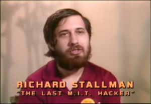

Non-Profit Infrastructure for Free Software
Bradley M. Kuhn
Saturday 19 March 2011
My Two Roles
President and Executive Director of Software Freedom Conservancy.
On Board of Directors of the FSF.
This talk’s about an important thing the two orgs have in common.
Some GNU History

GNU Manifesto, 1984.
- RMS wrote in that GNU Manifesto:
- “All sorts of development can be funded with a Software Tax”
- “People with new ideas could distribute programs as [free software], asking for donations from satisfied users”
Some FSF History

FSF-Employed Developers
- 1985–1997: FSF employs many developers:
- Paul Rubin (GCC)
- Jay Fenlason (awk, ld, etc)
- Diane Barlow Close (documentation)
- Roland McGrath (glibc, make)
- Mike Rowan
- Thomas Bushnell (tar, HURD)
- Jim Blandy (Emacs, Guile)
- Tom Lord (oleo, rx, Guile)
- Melissa Weisshaus (documentation)
- Lisa Goldstien (documentation)
- Karl Heuer (Emacs)
- Miles Bader (HURD)
- Ian Murdock (Debian (yes, FSF funded 1st Debian (!)))
FSF’s Now a Different Kind of Org
Non-Profit vs. For-Profit
For-profits act in interest in shareholders.
501(c)(3) Non-profits act in interest of the public good.
Software freedom is best when in public good.
Non-profit orgs (NPOs) are best place for software freedom.
Conservancy Differs from (Modern) FSF
What Can NPOs Do?
- Collect (USA-tax-deductible) donations for a project.
- both individual and corporate.
Distribute that money to advance project (and public good).
Make sure project isn’t controlled by for-profit interests.
Help leadership with non-technical decisions.
Organization Proliferation
Too many NPOs will confuse donors.
Need a board of directors, incorporation, meetings, IRS filings.
Hackers end up doing work they hate.
Less Free Software gets written.
Aggregating Under Umbrella
Conservancy is designed as one organization.
Composed of many different projects.
Each has its own funds.
One board of directors, one non-technical governance structure.
Funding Through Conservancy
 This presentation and these slides are licensed under a Creative Commons Attribution-Share Alike 3.0 United States License.
This presentation and these slides are licensed under a Creative Commons Attribution-Share Alike 3.0 United States License.